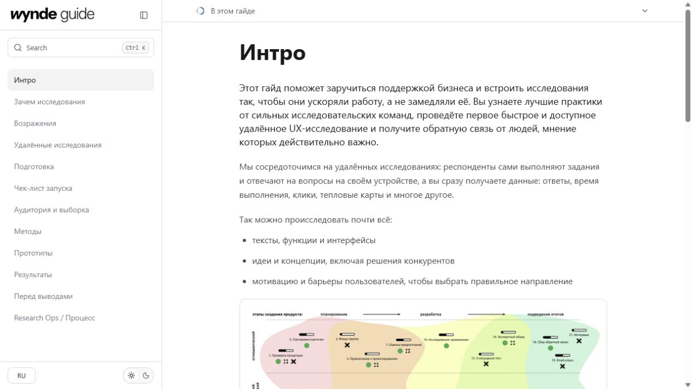
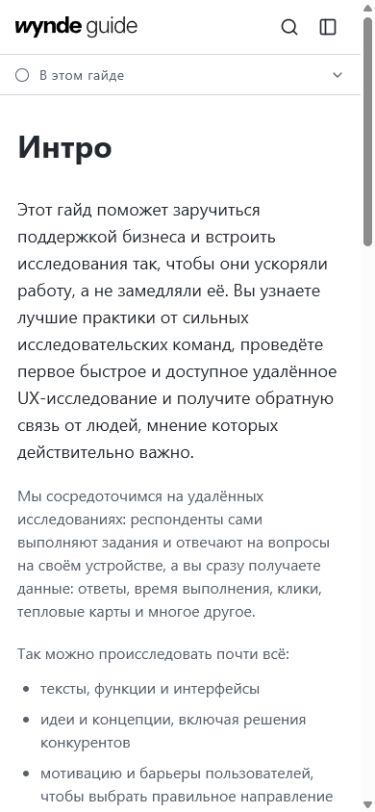
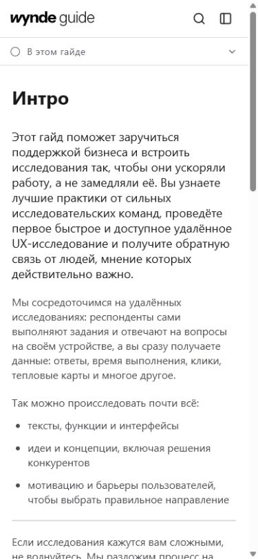
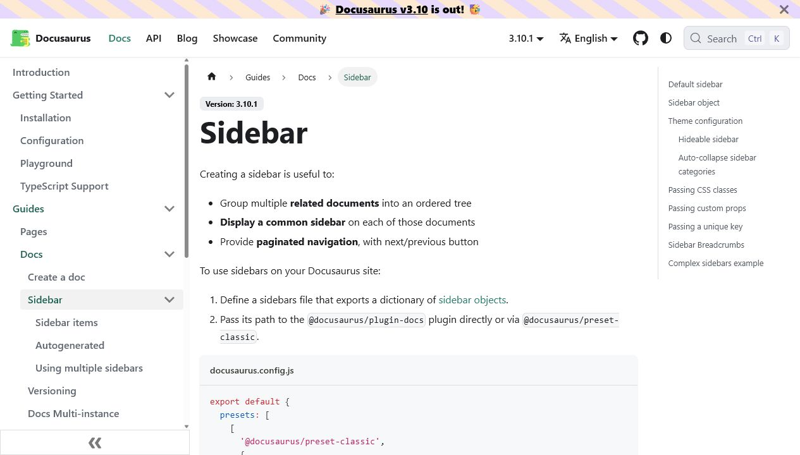

Аудит версий Wynde UX Research Guide
10 июля 2026
Отдельной «лучшей свежей ветки» сейчас нет: все локальные branch refs указывают на 1a18423, а свежий design-system существует только как dirty working-tree patch.
main@1a18423 как canonical base. Из свежего patch сохранить вынос ArticleBlocks.tsx, вернуть desktop-группы из 1f2141b и пересобрать semantic tokens поверх Figma/Wynde source of truth.
Current vs main




Сравнение версий
| Версия | Интерактивность | UI / IA | Вердикт |
|---|---|---|---|
9365db5 | Начальная, часть chrome — заглушки | Generic и слабо связана с guide use case | Не использовать |
1f2141b | Search, collapse, theme, mobile states | Лучшее desktop-группирование | Источник отдельных решений |
1a18423 | Самая полная committed функциональность | Desktop IA уплощена | База |
| Dirty patch | Почти без нового поведения | Primer-like reskin | Не принимать wholesale |
Ключевые проблемы
Visual update почти не материализовался
Скриншоты показывают одинаковую геометрию, content hierarchy и interaction surfaces. Patch в основном заменяет CSS variables и button wrappers, поэтому выглядит как слегка перекрашенный main.
Token layer обходит Figma
Новый CSS вручную задаёт GitHub/Primer-подобную палитру и fixed 32/24 px typography, тогда как Figma export хранит Wynde desktop 40/30 px и mobile 28/22 px. Semantic tokens должны alias'ить Figma values, а не создавать параллельный источник истины.
Разная desktop/mobile IA
Desktop flatten'ит четыре группы в один список, mobile сохраняет заголовки. Сильные docs products держат явную иерархию.


Rich blocks не питаются реальными данными
- Неопознанные callouts превращаются в один example variant.
- Toggle импортируется без body.
- Tables деградируют в raw paragraph.
- Steps, pathway, related и templates почти недостижимы из текущего adapter pipeline.
Интерактивность хрупкая
Большой client shell владеет шестью состояниями, поиском, overlays, theme и observer. Internal navigation использует обычные anchors; dialogs не имеют focus containment/restore. Ручная проверка нашла общий дефект: sticky top ToC перекрывает collapsed rail, делая Expand sidebar недоступным для pointer hit.
Рекомендуемый целевой shell
┌───────────────┬──────────────────────────────┬──────────────┐ │ Wynde + search│ eyebrow / breadcrumb │ On this page │ │ НАЧАЛО │ H1 + chapter intro │ active H2 │ │ • Интро │ semantic article blocks │ nested H3 │ │ ПОДГОТОВКА │ examples / checks / template │ │ │ • Чек-лист │ previous / next │ │ └───────────────┴──────────────────────────────┴──────────────┘
Следующие шаги
- Зафиксировать dirty patch отдельным snapshot/commit.
- Взять
1a18423как базу; вернуть grouped desktop navigation и сохранить ArticleBlocks extraction. - Пересобрать tokens как Wynde semantic aliases поверх Figma export.
- Исправить lossy content mapping до дальнейшей полировки карточек.
- Добавить browser tests для focus, search keyboard UX, collapse hit testing, RU/EN и 390/1280/1440 breakpoints.
Проверка
- Git refs/reflogs/remote/merge-base и file-level diff.
- Current/main desktop 1280×720 и mobile 390×844.
- Search/filter, mobile menu/contents, theme и collapse hit testing.
- 33/33 tests; lint, typecheck и git diff check прошли.
- Lazyweb quick search: strong coverage, top similarity 0.61. Hosted report остановился на внешнем HTTP 429.